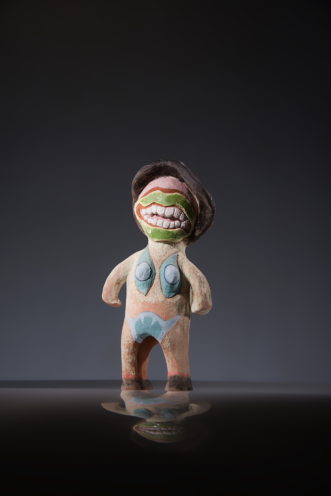
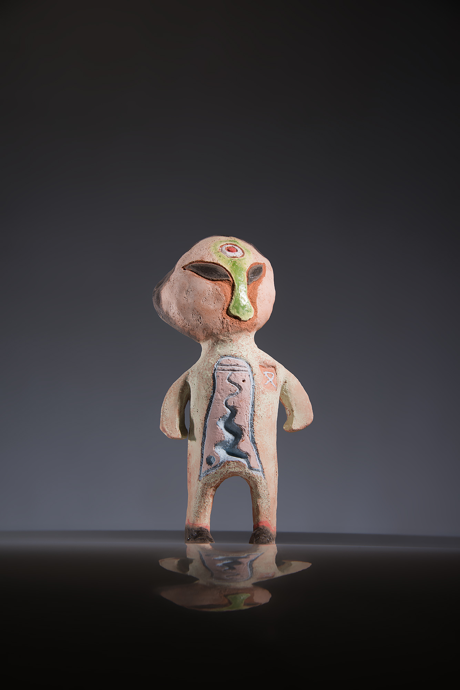
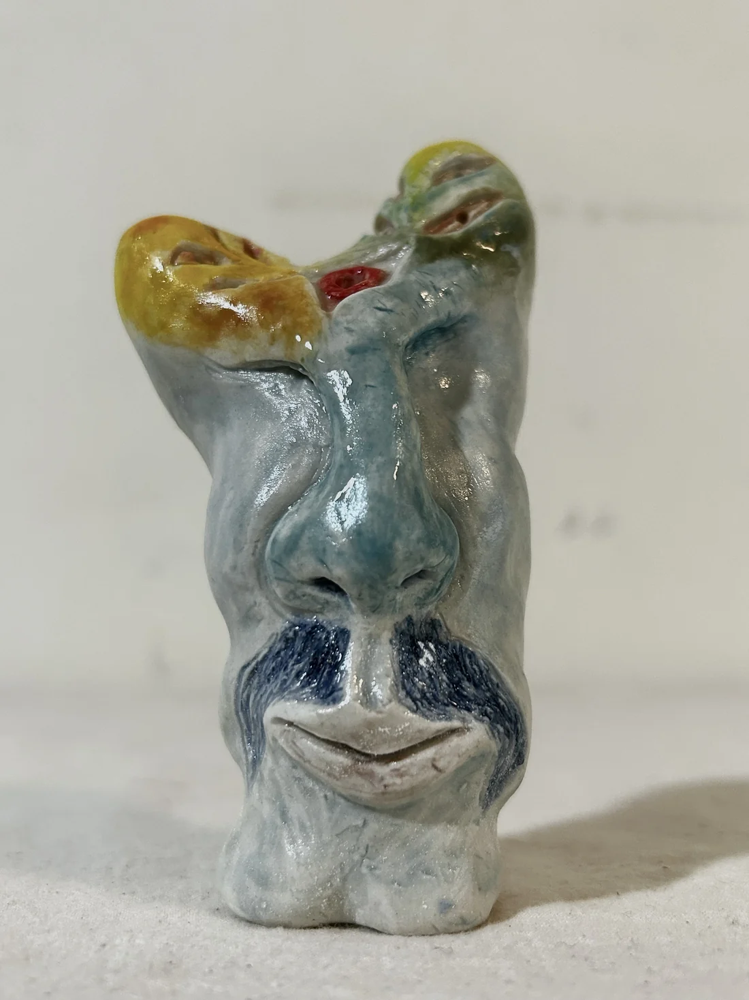
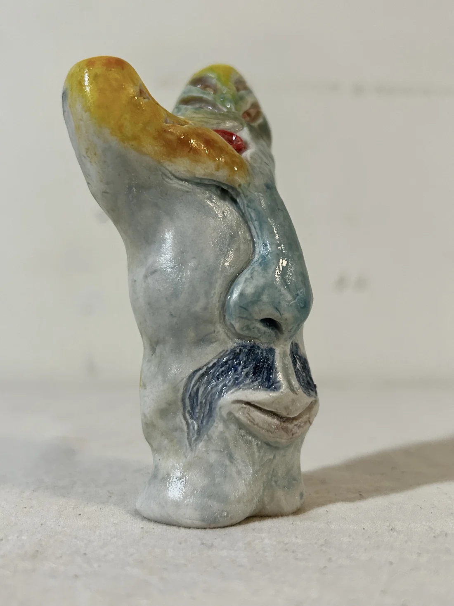
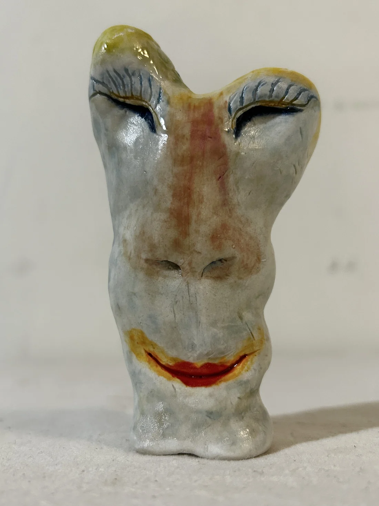
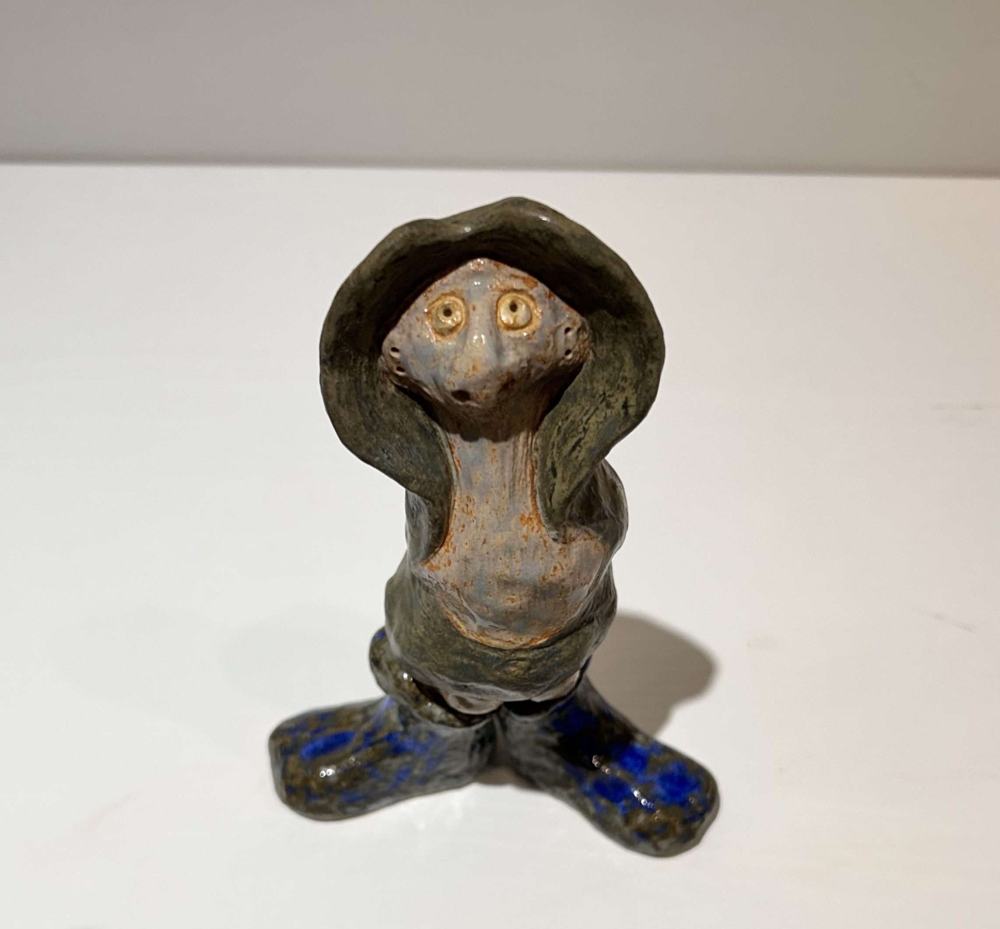
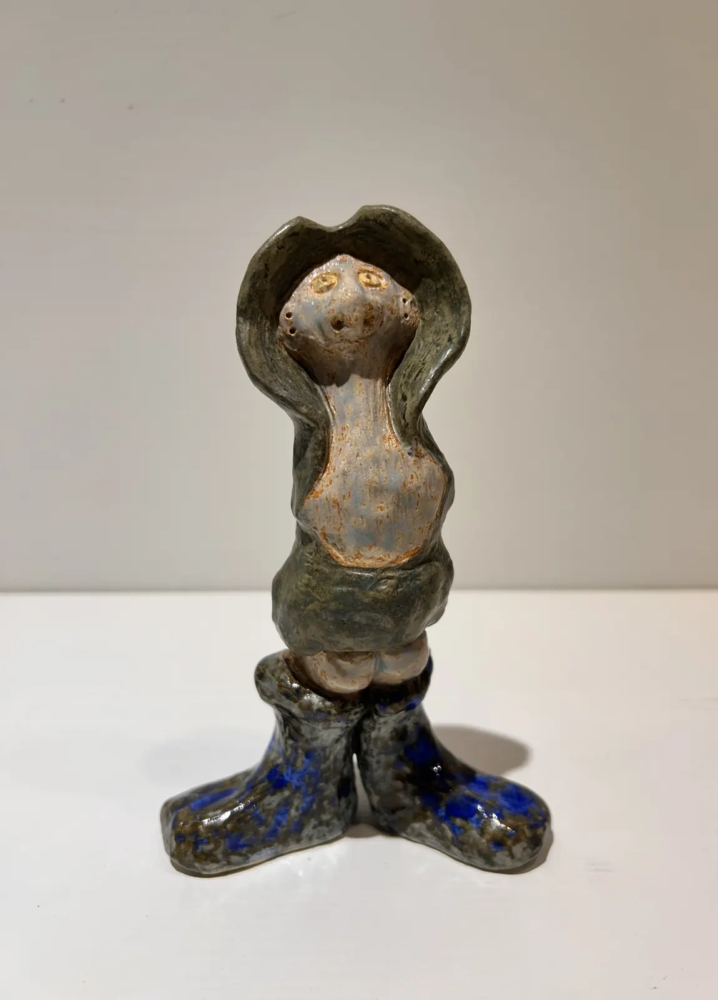
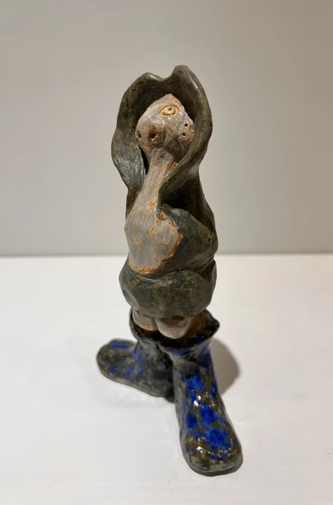
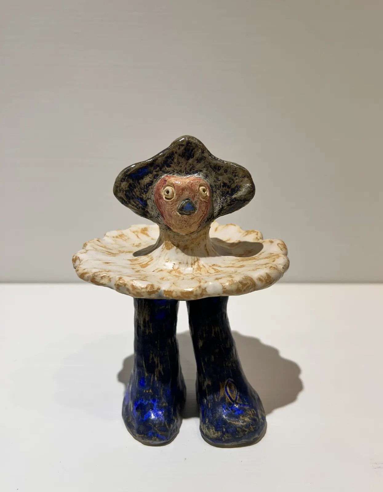
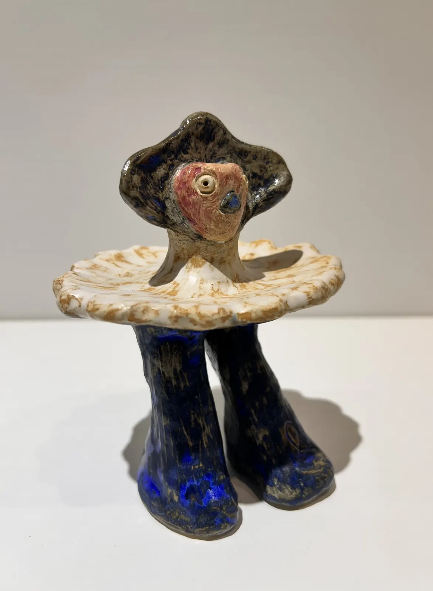

人格地層 Persona Layer
陶塑人格層 Ceramic Persona Layer
從線稿轉成陶塑、立體角色與可被繞行的人格，使公仔也成為生命容器。 Ceramic figures and walk-around personas as vessels of character and life.
陶塑人格層分類 Ceramic Persona Layer Categories
視界之外與雙面人格 Beyond the Field of Vision and Double Persona
這一段從外部視界、符號表情與雙面狀態出發，讓陶塑人格帶著可被繞行的多重面向。 This section begins with outer vision, symbolic expression, and doubled states, allowing ceramic personas to hold multiple aspects that can be viewed in the round.
來自視界之外 Beyond the Field of Vision

歡顏與記號 Grin and Signs


雙面微笑 Double Smile



陶塑人格層分類 Ceramic Persona Layer Categories
沉默的語言 Language of Silence
最後兩件作品收在無言與無語之間，讓沉默本身成為一種姿態，也成為陶塑人格最內部的聲音。 The final two works rest between wordlessness and speechlessness, making silence itself a posture and the innermost voice of the ceramic persona.
無言 Wordless



無語 Speechless


陶塑人格層把角色從紙面推向空間，讓表情、手勢與沉默都成為可以被觀看的立體證據。 The Ceramic Persona Layer pushes characters from the page into space, turning expression, gesture, and silence into sculptural evidence that can be seen.
這些作品像人格考古學最靠近身體的一層，讓內在角色真正站到觀者面前。 These works form the layer of Archaeology of Persona closest to the body, allowing inner figures to stand before the viewer.